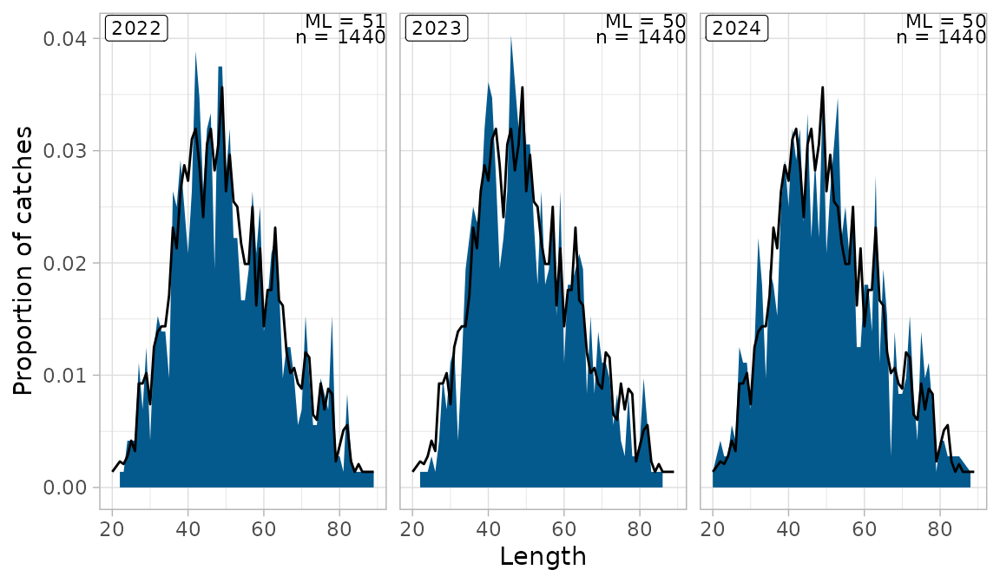

Length distributions, age-length keys and catch at age
Source:vignettes/ldist_alk.Rmd
ldist_alk.RmdThe commercial catch at age of the SAM stocks is the length distribution of the commercial samples, split into ages with an age–length key, and raised to the landings by gear and season. In pax that is
station |> pax_si_by_length() |> pax_si_scale_by_alk() |> pax_si_scale_by_landings()with the key from pax_ldist_alk(). The stock repos call
it through
hafroreports::hr_input_data_si_index(scale_by_landings = TRUE),
which adds weights, maturity and the stock-specific fixes; this vignette
shows the pax steps underneath, on simulated data.
Toy commercial samples
library(pax)
library(dplyr, warn.conflicts = FALSE)
pcon <- pax_connect()
set.seed(1)
# 36 samples: 3 years, 2 gears, 2 half-years, 3 gridcells
station <- expand.grid(
year = 2022:2024,
mfdb_gear_code = c("BMT", "LLN"),
month = c(3, 9),
gridcell = c(3213, 3703, 6113),
stringsAsFactors = FALSE
)
station$sample_id <- seq_len(nrow(station))
station$sampling_type <- 1 # commercial, collected by inspectors
station$gear_id <- ifelse(station$mfdb_gear_code == "BMT", 6, 1)
station$station <- station$sample_id
station$tow_number <- sample(1:60, nrow(station), replace = TRUE) # haul number
station$tow_length <- NA_real_
station$tow_depth <- NA_real_
# One sample has no position (no gridcell)
station$gridcell[station$sample_id == 1] <- NA
pax_import(pcon, station)
# Ages and lengths of the fish in each sample. The ldist table holds the
# length counts raised to the counted fish (here x 2); aldist the otoliths
fish <- do.call(rbind, lapply(station$sample_id, function(i) {
age <- sample(2:9, 60, replace = TRUE, prob = c(1, 3, 4, 4, 3, 2, 1, 1))
len <- round(15 + 7 * age + rnorm(60, 0, 4))
data.frame(sample_id = i, species = 1, age = age, length = len)
}))
ldist <- fish |>
count(sample_id, species, length, name = "count") |>
mutate(sex = NA_real_, count = 2 * count)
aldist <- fish |>
group_by(sample_id) |>
slice_head(n = 20) |> # 20 otoliths per sample
ungroup() |>
mutate(weight = 0.01 * length^3, count = 1)
measurement <- data.frame(
sample_id = rep(station$sample_id, 2),
species = 1,
measurement_type = rep(c("LEN", "CNT"), each = nrow(station)),
count = 60
)
pax_import(pcon, ldist)
pax_import(pcon, aldist)
pax_import(pcon, measurement)
pax_import(pcon, data.frame(species = 1, a = 0.01, b = 3), name = "lw_coeffs")
# Landings (kg) by year, month and gear; some with no month
landings <- expand.grid(year = 2022:2024, month = c(1:12, NA), gear_id = c(6, 1))
landings$species <- 1
landings$mfdb_gear_code <- ifelse(landings$gear_id == 6, "BMT", "LLN")
landings$catch <- ifelse(is.na(landings$month), 50e3, 400e3)
landings$ices_area <- "5a"
landings$country <- "Iceland"
landings$boat_id <- 1
pax_import(pcon, landings)Length distributions, raised once
The ldist table that pax_from_mar() imports
is already raised to the counted fish (with
mar::skala_med_taldir()): a sample with 60 fish measured
and 60 more counted has every length count doubled.
pax_ldist_scale_abund() does the same raising from the
measurement table, and is only for unraised counts. Applied
to ldist it raises a second time:
tbl(pcon, "ldist") |>
pax_ldist_scale_abund() |>
summarise(fish = sum(count)) |>
pull(fish)
#> [1] 8640
tbl(pcon, "ldist") |> summarise(fish = sum(count)) |> pull(fish)
#> [1] 4320So round the lengths and nothing else:
ld <- tbl(pcon, "station") |>
filter(sampling_type %in% c(1, 2, 8)) |>
pax_ldist_by_year(ldist_tbl = tbl(pcon, "ldist") |> pax_ldist_scale_round()) |>
filter(!is.na(length))
ld |> pax_ldist_plot()
The default of ldist_tbl in this version of pax only
rounds; older versions (before branch smn-survey) raised
again, as did the hafroreports survey length figures. The stock repos
pass ldist_tbl explicitly (04-whg, 07-bli, 12-rjr, 13-cas,
14-mon, 16-dgs). pax_ldist_by_year() also returns a row
with length NA for samples without the species: drop it
before e.g. max(length). pax_ldist_joy_plot()
draws the same data by gear.
Age–length key
pax_ldist_alk() joins the stations to the otoliths in
aldist and gives the proportion at age (agep)
in each cell of year, gear group, region, half-year and length
group:
groups <- list(
lgroups = seq(0, 100, 5),
gear_group = list(BMT = "BMT", LLN = "LLN"),
tgroup = list(t1 = 1:6, t2 = 7:12)
)
comm <- tbl(pcon, "station") |> filter(sampling_type %in% c(1, 2, 8))
alk <- comm |>
pax_ldist_alk(
lgroups = groups$lgroups,
gear_group = groups$gear_group,
tgroup = groups$tgroup
)
alk |>
filter(ygroup == 2022, gear_name == "BMT", tgroup == "t1", lgroup == 50) |>
arrange(age) |>
collect()
#> # A tibble: 2 × 8
#> # Groups: ygroup, gear_name, region, species, tgroup, lgroup [1]
#> ygroup gear_name region species tgroup lgroup age agep
#> <int> <chr> <chr> <dbl> <chr> <int> <int> <dbl>
#> 1 2022 BMT all 1 t1 50 5 0.714
#> 2 2022 BMT all 1 t1 50 6 0.286lgroups are lower bounds (here 5 cm groups); the default
is 0–200 cm by 5 cm, so check the old code’s call for its groups
(09-wol).
Catch at age
The samples’ length distributions are split into ages by the key, and the numbers raised so the biomass matches the landings of each year, gear group and half-year:
at_age <- comm |>
pax_si_by_length() |>
pax_si_scale_by_alk(
lgroups = groups$lgroups,
gear_group = groups$gear_group,
tgroup = groups$tgroup,
alk_tbl = alk
) |>
pax_si_scale_by_landings(
species = 1,
gear_group = groups$gear_group,
tgroup = groups$tgroup
)
#> Landings with unknown month (300 t) are left out of the scaling, see month_na
catch_at_age <- at_age |>
group_by(year, age) |>
summarise(
n = sum(si_abund) / 1000, # thousands
mw = 1000 * sum(si_biomass) / sum(si_abund) # g
) |>
collect() |>
arrange(year, age)
#> ! Grouped output by "year".
#> ℹ Override behaviour and silence this message with the `.groups` argument.
#> ℹ Or use `.by` instead of `group_by()`.
head(catch_at_age)
#> # A tibble: 6 × 4
#> # Groups: year [1]
#> year age n mw
#> <int> <int> <dbl> <dbl>
#> 1 2022 2 293. 285.
#> 2 2022 3 1002. 476.
#> 3 2022 4 1308. 828.
#> 4 2022 5 1474. 1258.
#> 5 2022 6 862. 1963.
#> 6 2022 7 616. 2597.The landings with no month were left out of the raising, with a
message. Old tidypax code gave them month 6 and unknown gear BMT; to do
the same, pass month_na = 6, gear_na = "BMT" (in
hafroreports landings_month_na,
landings_gear_na).
The sample without a position was dropped too: it has no gridcell, so no region, and matches no key cell.
at_age |> ungroup() |> summarise(samples = n_distinct(sample_id)) |> pull(samples)
#> [1] 35Plaice lost whole years this way (23-ple). Give such samples a
gridcell before the chain
(hr_input_data_si_index(gridcell_na = 2741)), or import the
stations with
pax_from_mar(gridcell_from_position = TRUE).
In the stock repos all of this is one call:
hafroreports::hr_input_data_si_index(
pax_db,
sampling_type = c(1, 2, 8),
tow_number = NULL, # haul numbers: no tow filter
lw_key = input_data_lw_pred, # weights at length
maturity_key = input_data_maturity_key,
tgroup = list(t1 = 1:6, t2 = 7:12),
gear_group = list(BMT = c("BMT", "NPT", "SHT", "PGT"), LLN = "LLN",
DSE = c("PSE", "DSE"), Other = pax::pax_add_other()),
scale_by_landings = TRUE,
landings_month_na = 6,
landings_gear_na = "BMT"
)and hr_input_data_combine() (or the stock’s own version)
joins catch, survey indices, weights and maturity into the SAM
input.
Pitfalls
-
Double raising. Never apply
pax_ldist_scale_abund()to theldisttable; passldist_tbl = tbl(pax_db, "ldist") |> pax_ldist_scale_round(). -
No tow filter on commercial samples.
tow_numberis the haul number there (tow_number = NULL). With the survey filter0:35, 03-sai lost 8–14% of its samples a year. -
Unknown gear and month. Samples and landings were
filled differently by tidypax; see
sample_gear_na,landings_gear_naandlandings_month_nainhr_input_data_si_index(). Gear codes the mapping lacks (gear 91) are filled withpax_fill_mfdb_gear_code()(see the landings vignette). -
Gear groups. Landings with a gear outside every
group are left out of the raising (with a message); add a default group
with
Other = pax_add_other(). - Samples without a position are dropped at the key (above).
-
More than one region makes
pax_si_scale_by_landings()split the landings by the logbooks; don’t add a second region just to catch unpositioned samples. -
Stomach-sampling trips.
pax_from_mar()leaves out the MAG*/MO* trips (skip_trips) that tidypax kept; cod lost up to 26% of its samples. Add them back withextra_tables = "station_skipped"(01-cod). -
Pooled years. Pool years with few otoliths with
ygroup(orhr_pool_years()), and scale strata on the real years. - Plus group. Keep all ages in the input data and let SAM form the plus group; cutting it early pushes the old fish’s weight onto younger ages when raising to landings.